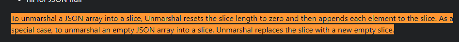

下面这段代码输出什么？
package main
import (
"encoding/json"
"fmt"
)
type AutoGenerated struct {
Age int `json:"age"`
Name string `json:"name"`
Child []int `json:"child"`
}
func main() {
jsonStr1 := `{"age": 14,"name": "potter", "child":[1,2,3]}`
a := AutoGenerated{}
json.Unmarshal([]byte(jsonStr1), &a)
aa := a.Child
fmt.Println(aa)
jsonStr2 := `{"age": 12,"name": "potter", "child":[3,4,5,7,8,9]}`
json.Unmarshal([]byte(jsonStr2), &a)
fmt.Println(aa)
}
- A：[1 2 3] [1 2 3] ；
- B：[1 2 3] [3 4 5]；
- C：[1 2 3] [3 4 5 6 7 8 9]；
- D：[1 2 3] [3 4 5 0 0 0]
答: B 在线运行
解析: 如题中 2次打印的变量都是 aa 变量。
aa 切片的内容和 a.Child切片内容是一样的(指向同一个底层数组)
- 问题一 为什么jsonStr2 Unmarshal 会修改到 aa 切片的内容?
- 问题二 为什么Unmarshal运行后aa 切片的内容不是3,4,5,7,8,9
上2个问题其实都可以在Go文档中得到答案
- 官方(英文)https://pkg.go.dev/encoding/json#Unmarshal

为了将一个 JSON 数组反序列化为切片，Unmarshal 会将切片的
长度重置为零，然后将每个元素依次追加到切片中。作为一个特殊情况，当反序列化一个空的 JSON 数组时，Unmarshal 会用一个新的空切片替换原有的切片。
也即是说,Go Json 库Unmarshal时 遇到切片的时候 本质上是
a.Child = a.Child[:0]
a.Child = append(a.Child, 3)
a.Child = append(a.Child, 4)
a.Child = append(a.Child, 5)
a.Child = append(a.Child, 6)
a.Child = append(a.Child, 7)
a.Child = append(a.Child, 8)
a.Child = append(a.Child, 9)
问题一 由于aa和a.Child共用的是同一个底层数组,因此会互相影响
问题二 但是append(a.Child, 6)时,a.Child触发了扩容机制。a.Child指向了一个新的底层地址,后续的append就不影响了